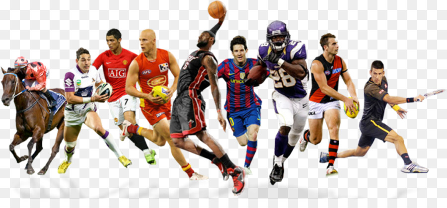

El aspecto de entretenimiento del deporte, junto al crecimiento de los medios de comunicación y el incremento del tiempo de ocio, han provocado que se profesionalice el mundo del deporte. Esto ha conducido a cierta polémica, ya que para el deportista profesional puede llegar a ser más importante el dinero o la fama que el propio acto deportivo en sí. Al mismo tiempo, algunos deportes han evolucionado para conseguir mayores beneficios o ser más populares, en ocasiones perdiéndose algunas valiosas tradiciones.
El fútbol en Europa y América Latina, o el fútbol americano, el básquetbol y el béisbol en EE. UU., son ejemplos de deportes que mueven al año enormes cantidades de dinero. Esta evolución conduce a un aumento de la competitividad, dado que la lucha por la victoria adquiere otro significado al incluirse también el apartado económico. Este aumento, asimismo, lleva a la aparición de un importante lado negativo de la profesionalidad, incluyendo el uso de diversas argucias o trampas como la práctica del dopaje por parte de los deportistas.
El mundo del deporte como espectáculo mueve anualmente una cantidad cercana a los 70 000 millones de euros (datos de 2014), entre venta de entradas, derechos televisivos y patrocinios. Si se incluyen aquellos consumos relacionados con la práctica del deporte, como material y ropa deportivos, equipamientos, y gastos en salud y forma física, la industria del deporte genera cada año a nivel global cerca de 600 000 millones de eurosSegún los datos de audiencia, los torneos más seguidos en el mundo son los Juegos Olímpicos de Verano, la Copa Mundial de Fútbol, Copa del Mundo de Rugby y Clásico Mundial de Béisbol, pero anualmente son la Liga de Campeones de la UEFA, la Liga Nacional de Fútbol Americano, Grandes Ligas de Béisbol y la .Asociación Nacional de Baloncesto.

Los deportistas profesionales son personas especialmente dotadas para un determinado deporte. Ganan dinero practicando su deporte ante una audiencia. Existe una gran variedad de deportes que pueden practicarse a nivel profesional.Los deportes en los que hay más oportunidades son el fútbol, el básquet y el tenis. También las hay en el ciclismo, el golf, la natación y las carreras de automóviles.Los deportistas profesionales invierten mucho tiempo entrenando y practicando su destreza en el deporte escogido. Este entrenamiento de habilidades se combina con entrenamiento físico para contribuir a mejorar su rendimiento.
Muchos deportistas profesionales tienen entrenadores que les enseñan nuevas técnicas, les ayudan a mejorar las habilidades que poseen y contribuyen a mantenerles motivados. Los que practican deportes de grupo entrenan con otros miembros del equipo.
El entrenamiento incluye jugar partidos o participar en competiciones, lo que puede significar desde jugar un partido en una liga de fútbol, hasta participar en un campeonato formado por una serie de partidos o carreras, etc. Los competidores que ganan los partidos pueden tener que jugar varias veces en un periodo de días o semanas.Tras un tiempo de descanso para recuperarse, los deportistas profesionales vuelven a su programa de entrenamiento. Puesto que muchos deportes no se juegan durante todo el año, los que se dedican a ellos suelen tener tiempo libre fuera de la temporada de juego o competición.
A algunos deportistas muy famosos las empresas les pagan para que promocionen sus productos, lo que suele implicar negociar con los representantes de dichas empresas, posiblemente a través de un promotor o manager, quien velará por los intereses del deportista. Entonces el deportista aparecerá en imágenes publicitarias o anuncios o en entrevistas de radio y televisión.Los deportistas profesionales tienen horarios de trabajo irregulares, ya que pueden tener que empezar por la mañana temprano y terminar tarde al final del día y también trabajar durante los fines de semana o los días festivos. Muchos entrenan y trabajan al aire libre, y en numerosos deportes esto es así independientemente del tiempo atmosférico.
Muchos deportistas profesionales invierten una cantidad considerable de tiempo viajando durante las competiciones. Algunos deportes, por ejemplo el tenis, requieren que el jugador pase gran parte del año viajando de competición en competición, tanto nacionales como internacionales.En muchos de los deportes más físicos o de contacto, el promedio de duración de una carrera es de tan solo diez o quince años. Muchos profesionales han puesto fin a su carrera de jugadores/deportistas cuando han llegado a los veintitantos o treintaitantos. Algunos continúan trabajando como entrenadores o directivos, o bien en las retransmisiones deportivas.